三句話說完：用學校帳號登入 → 在表格上點空格 → 填活動名稱按「確認借用」。
一張表同時看到所有場地、每一節的使用狀況；申請人自動帶入，不用再打名字；固定課程勾「每週重複」一次借到學期末。
1登入
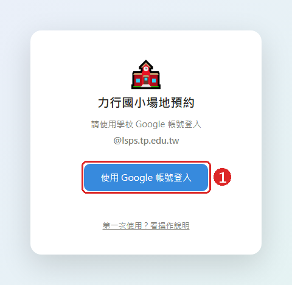
登入畫面
- 1按 使用 Google 帳號登入，選你的學校帳號（@lsps.tp.edu.tw）。
和「頒獎典禮座位預約」是同一套帳號，登入過一次之後會記住。
⚠ 從 LINE、Facebook 點連結會登入失敗，請改用 Chrome、Edge 或 Safari 開啟。
2看哪裡有空（每日總覽）
登入後看到的就是這張表：每一列是一個場地、每一欄是一節，一眼就知道今天哪裡有空。
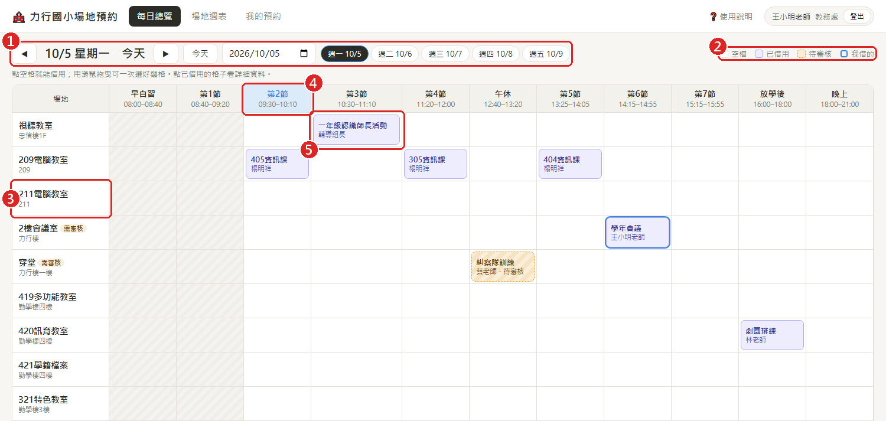
每日總覽（點圖放大）
- 1換日期：◀ ▶ 前後一天，或點下面的「週一～週五」、直接挑日期。
- 2顏色：白色＝空檔、紫色＝已借用、黃色斜紋＝等待審核、藍框＝你自己借的；灰色斜紋＝已經過去的時段。
- 3場地名稱旁有 需審核 的，借了之後要等承辦人核准才生效（目前所有場地都是借了就生效，這是管理者日後可開啟的功能）。
- 4藍底的欄位是現在這一節。
- 5已借用的格子會寫活動名稱和申請人，點一下看詳細資料。
3借用場地
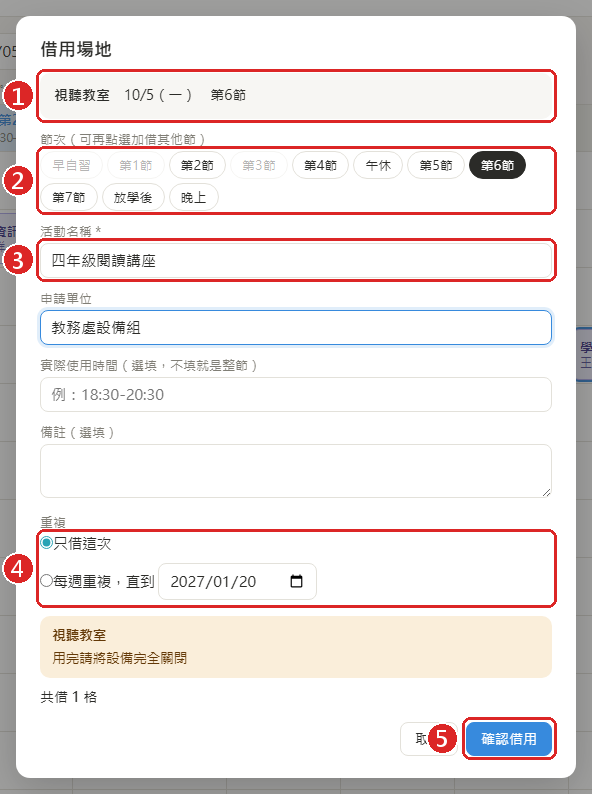
點空格後跳出的借用視窗
- 在總覽表上點一個空格（滑鼠移過去會出現「＋ 借用」）。
- 確認 1 場地、日期、節次。想多借幾節，直接在 2 點其他節次（灰色的是已被借走或已過去）。
- 填 3 活動名稱（必填）。申請單位第一次填好後會自動記住。
- 4 選「只借這次」或「每週重複」。
- 按 5 確認借用 就完成了。
💡 申請人不用填，系統會用你登入的帳號。晚上或放學後的活動可以在「實際使用時間」寫 18:30-20:30。
目前所有場地按下去就立刻借到。如果之後某個場地被設成「需審核」，借用後會先顯示 待審核，承辦人核准後變成 已借用。
4一次借好幾格
用滑鼠按住一個空格、拖到另一格再放開，框到的空格會一起選起來（可以跨節次、也可以跨場地），放開就跳出借用視窗。
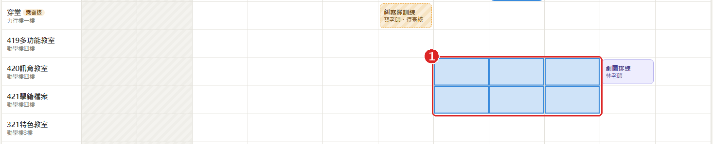
1 拖曳框到的空格會變藍
手機沒辦法拖曳：點一格後，在借用視窗裡的「節次」點選其他節就能加借。
5固定課程：每週重複
社團、資訊課這類每週固定的課，不用每週借一次。切到上方的 「場地週表」，看一個場地一整週的狀況：
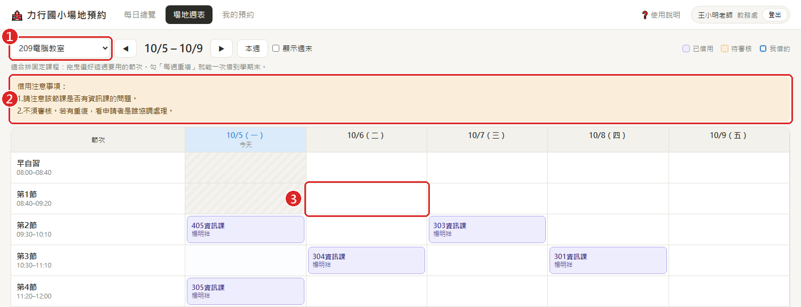
1 選場地 2 這個場地的借用注意事項 3 點要借的那一格
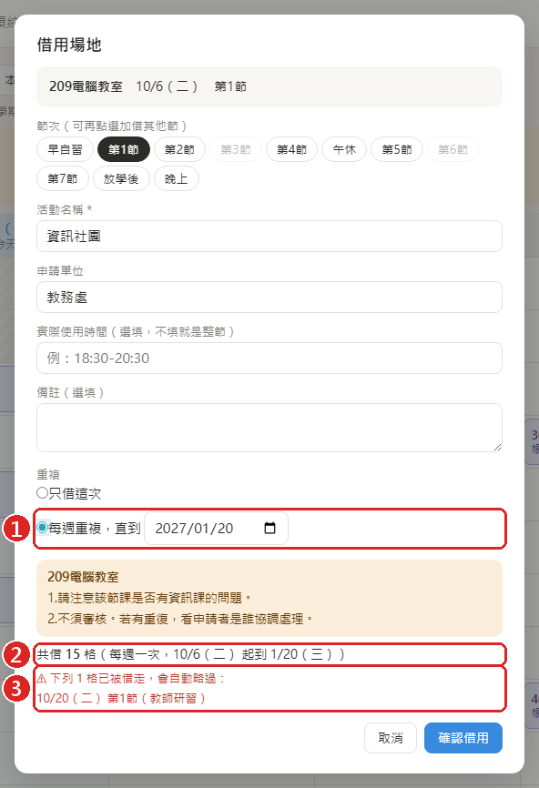
勾選每週重複
- 1選 每週重複，直到，日期預設是學期結束日，可以自己改。
- 2系統算好總共會借幾格。
- 3中間如果有幾週已經被別人借走，會列出來並自動跳過，其他週照樣借到。
💡 一週有好幾堂課：在週表上把這週要用的格子都選起來（拖曳或在視窗裡點節次），再勾每週重複，一次全部搞定。
6查看別人的預約
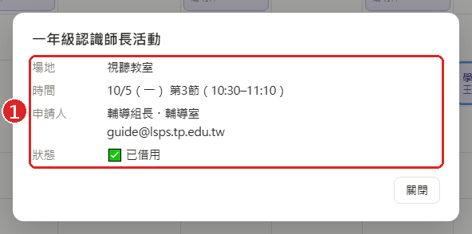
點已借用的格子
點任何已借用的格子，1 會顯示活動、時間、申請人和 email。需要協調場地時，可以直接寫信給對方。
別人的預約只能看、不能改。如果是你借的，這裡會有「取消」按鈕。
7我的預約、取消、退回通知
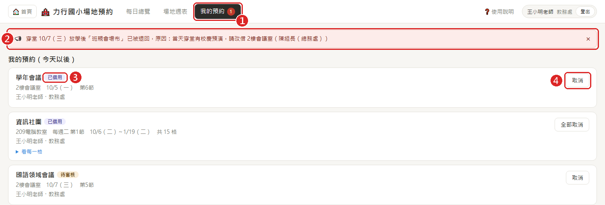
我的預約
- 1上方「我的預約」出現紅色數字，表示有新通知。
- 2申請被退回或被承辦人取消時，這裡會寫原因。看完按 × 關掉。
- 3每筆預約的狀態：已借用 或 待審核。每週重複的會合成一筆，寫「每週二 第1節 共 15 格」。
- 4不用了就按 取消，把場地讓給別人。每週重複的可以「全部取消」，或展開「看每一格」只取消某一週。
8審核人：核准或退回
如果你是某些場地的審核人，上方會多一個 「待審核」，紅色數字是還沒處理的件數。
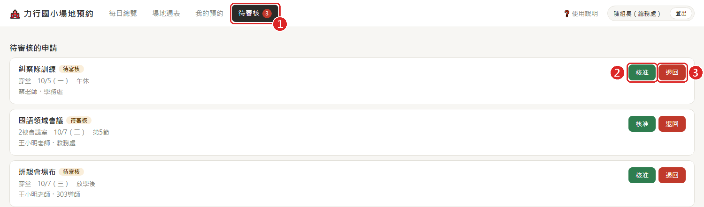
待審核清單
- 1「待審核」後的數字＝等你處理的格數。
- 2核准：每週重複的申請會整批一起核准。
- 3退回：填寫原因，系統會通知申請人，場地也會空出來給別人借。
💡 也可以在總覽表上點黃色的格子，只核准其中某一格。
9管理者：場地管理
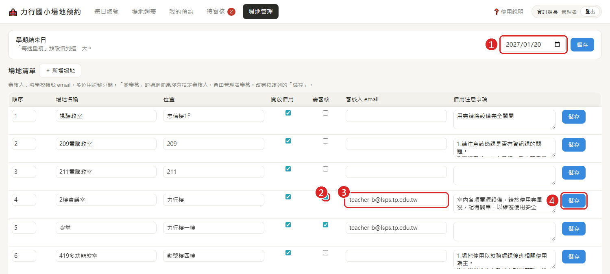
場地管理（只有管理者看得到）
- 1學期結束日：「每週重複」預設借到這一天，每學期開學前記得改。
- 2勾 需審核，這個場地的申請就要等人核准。
- 3審核人：填學校 email，多位用逗號分開。需審核但沒填審核人的場地，會由管理者審核。
- 4每一列改完要按該列的 儲存。
取消「開放借用」的場地不會出現在總覽表上（例如整修中）。要新增場地，按「＋ 新增場地」。
10用手機借
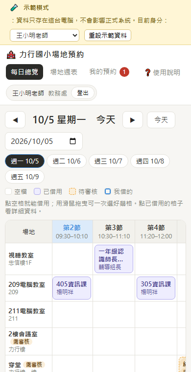
手機畫面
手機也能用：打開時會自動捲到現在這一節，左右滑動看其他節次，點空格就能借。
手機不能拖曳多選，請點一格後在借用視窗裡點選其他節次。
?常見問題
「待審核」是什麼意思？什麼時候才算借到？
目前所有場地都免審核，借了就生效。日後若某些場地改成需審核，名稱旁會標「需審核」，借用後是 待審核，承辦人按核准後變成 已借用 才算借到。審核期間這格已經幫你佔住，別人借不走。
怎麼知道被核准還是被退回？
被退回時，上方「我的預約」會出現紅色數字和退回原因。被核准時，格子會從黃色斜紋變成紫色。
借錯了怎麼辦？
到「我的預約」按取消，或在總覽表點那一格按「取消這一格」，再重新借一次。
按確認借用時說「剛被別人借走了」？
你在填資料時，剛好有人先借了同一格。畫面已經更新，請改選其他時段。系統保證同一格不會兩個人同時借到。
以前在校務系統借的場地還在嗎？
系統上線時已經把校務系統裡「已通過」的預約匯進來，詳細資料會顯示「由舊校務系統匯入」，申請人姓名是校務系統遮罩後的樣子（例如「楊Ｏ祥」）。這些預約本人無法在新系統取消，需要取消請洽管理者。
要借的場地不在表上？
表上只列開放借用的場地。需要新增場地，請洽資訊組（it@lsps.tp.edu.tw）。
有問題請洽資訊組（it@lsps.tp.edu.tw）